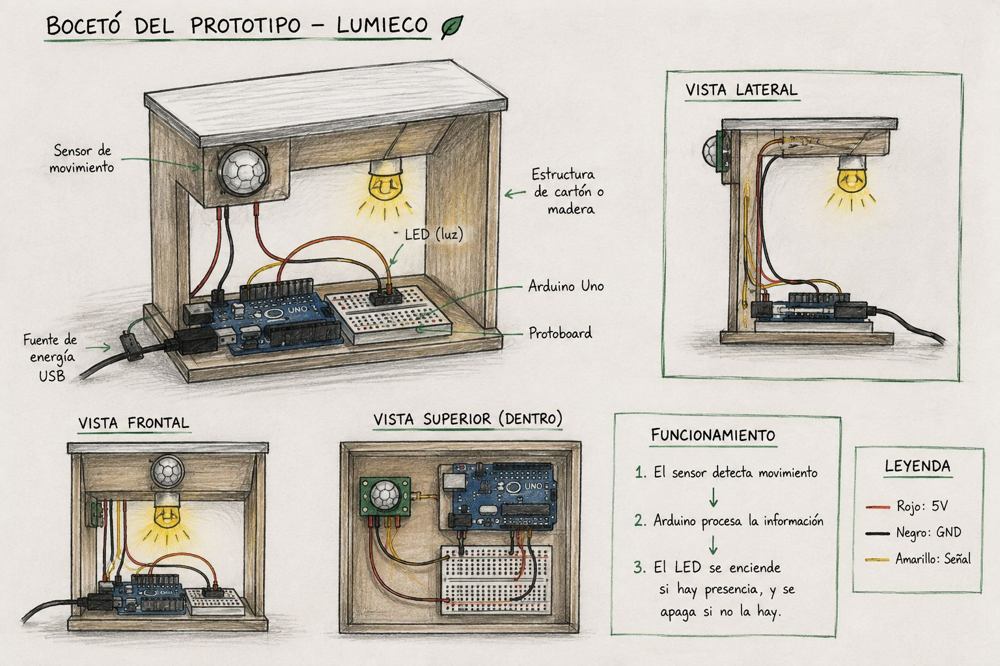

Arduino
Controla el sistema.
En esta página mostramos el proceso que seguimos para desarrollar nuestro proyecto LumiEco.
Queremos construir LumiEco, un sistema de iluminación inteligente basado en Arduino que permita controlar una luz y ayudar a evitar el desperdicio de energía.
Porque el consumo innecesario de electricidad es un problema común y pensamos que la tecnología puede ayudar a utilizar la energía de una manera más eficiente.
Buscamos reducir el desperdicio de energía causado por luces que permanecen encendidas cuando no son necesarias.
Durante el desarrollo de LumiEco investigamos diferentes conceptos relacionados con la electrónica, Arduino y la automatización. Esta investigación nos ayudó a comprender cómo funcionan los componentes y cómo podemos utilizarlos para construir nuestro proyecto.
Arduino es una plataforma electrónica que permite crear proyectos mediante una placa programable. En LumiEco utilizamos Arduino Uno para controlar los componentes del sistema.
Los LED son componentes electrónicos que producen luz cuando reciben corriente eléctrica. En LumiEco utilizamos un LED para representar la iluminación que controla el sistema.
Los sensores permiten detectar diferentes condiciones del entorno. En nuestro proyecto utilizamos un sensor PIR para detectar movimiento o presencia humana.
Podemos automatizar una iluminación utilizando un sensor conectado a Arduino. Cuando el sensor detecta movimiento, Arduino procesa la información y puede activar el LED.
Es importante conocer la función de cada componente, realizar correctamente las conexiones y respetar sus características eléctricas para evitar errores durante el funcionamiento del proyecto.
Aquí colocaremos las páginas, videos o documentos que realmente utilizamos para realizar nuestra investigación.
Nombre de la página o documento.
Nombre del video o página consultada.
Documento utilizado para la investigación.

Imaginamos un sistema compacto de iluminación que pudiera detectar una situación determinada y controlar una luz automáticamente.
Queremos que LumiEco pueda automatizar la iluminación y ayudar a reducir el consumo innecesario de energía.
Estos son algunos de los componentes utilizados para construir nuestro prototipo.
Controla el sistema.
Representa la iluminación.
Emite una alerta sonora.
Detecta la condición necesaria.
Conectan los componentes.
Permite realizar las conexiones.
Para construir LumiEco seguimos diferentes pasos hasta obtener el prototipo.
Reunimos los materiales y componentes necesarios.
Realizamos las conexiones entre Arduino y los componentes.
Programamos el comportamiento del sistema.
Integramos los componentes en el prototipo.
Foto 1
Foto 2
Foto 3
Comprobamos que los componentes respondieran correctamente y que el sistema realizara la función programada.
El sistema logró responder a las condiciones establecidas y controlar la iluminación.
Aquí explicaremos los problemas que realmente encontramos durante la construcción del proyecto.
Explicaremos las modificaciones realizadas para mejorar el funcionamiento del prototipo.
Finalmente, presentamos el prototipo LumiEco terminado.
Quedó como un prototipo funcional de iluminación inteligente.
Puede controlar la iluminación de acuerdo con las condiciones programadas.
Sí. Como prototipo demuestra cómo la automatización puede ayudar a evitar el uso innecesario de iluminación y promover un consumo energético más eficiente.
Aquí irá la fotografía final